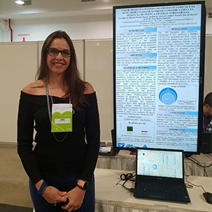

Congresso do Departamento de Imagem Cardiovascular

Unir teoria à prática faz parte do aprendizado desenvolvido no curso de Medicina da Unidavi. As alunas
da terceira fase do curso, Isabela de Andrade Lindner e Patrícia Sens de Oliveira, orientadas pela Profª
Drª Josie Budag Matsuda, e em parceria com a cardiologista Drª Caroline de Oliveira Fischer Bacca, desenvolveram
o trabalho "Valor preditivo positivo do protocolo precoce da ecocardiográfica de estresse com dobutamina
na detecção de doença arterial coronariana".
O trabalho foi apresentado no 8º Congresso do Departamento de Imagem Cardiovascular, realizado em Florianópolis,
representado pela Drª Caroline.
Este trabalho é prova de que os acadêmicos da Unidavi juntamente com profissionais da área, conseguem
unir a teoria da sala aula com a vivência do profissional no mercado.
Fórum de Prevenção aos Riscos de Desastres na Bacia Hidrográfica do Rio Itajaí
Neste mês aconteceu o XI Fórum Permanente de Prevenção aos Riscos de Desastres na Bacia Hidrográfica do Rio Itajaí, realizado
em Brusque. O evento de três dias abordou entre várias questões relacionadas as práticas ambientais e
de urbanização, ações que auxiliam a minimizar os desastres naturais causados na região banhada pelo
rio Itajaí.
A professora Cheila da Silva participou do evento e representou a Unidavi na mesa redonda de abertura, com a temática "Controle
de terraplanagem e prevenção de riscos: Implicações e responsabilidades". A mesa foi composta por diversos
profissionais que abordaram a temática da terraplagem x desastres, dentro de suas respectivas áreas de
conhecimento, relatando ainda diversas experiências diante de alguns casos.
Comportamento do Adolescente é tema de palestra

A Escola de Educação Básica Orlando Bertoli, de Presidente Getúlio recebeu uma equipe da Unidavi para a realização de uma
ação de extensão: A palestra: Comportamento do Adolescente.
A temática é bastante ampla e foram abordados viéses como alterações neurais e hormonais além de competências para a faixa
etária. Segundo a palestrante e psicóloga Indiara Etelvina Gonçalves, o principal objetivo é que os adolescentes
"tenham a compreensão e desenvolvam adequadamente suas competências para que tenham uma entrada na fase
adulta mais saudável e assertiva" completa el